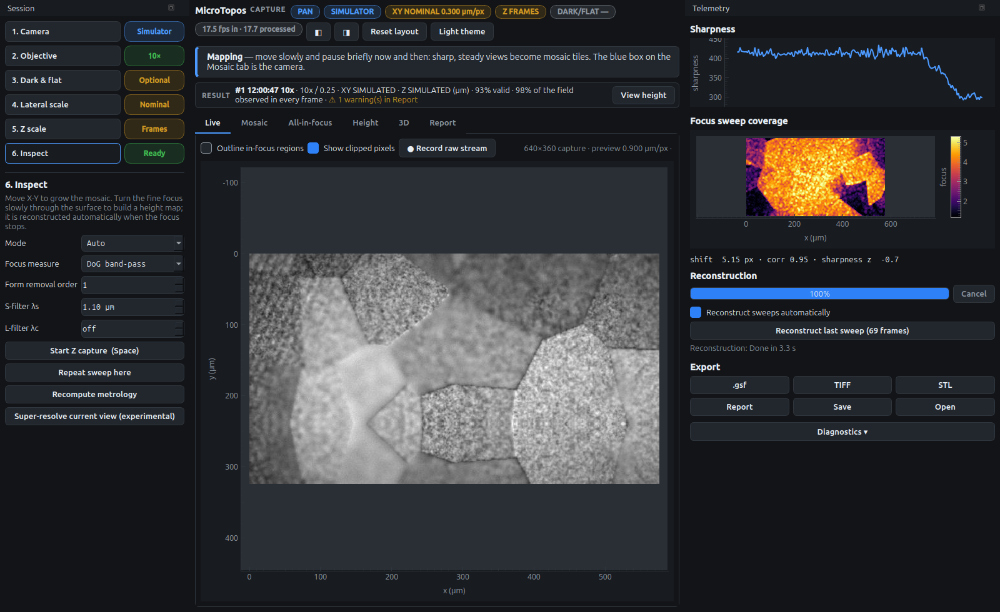
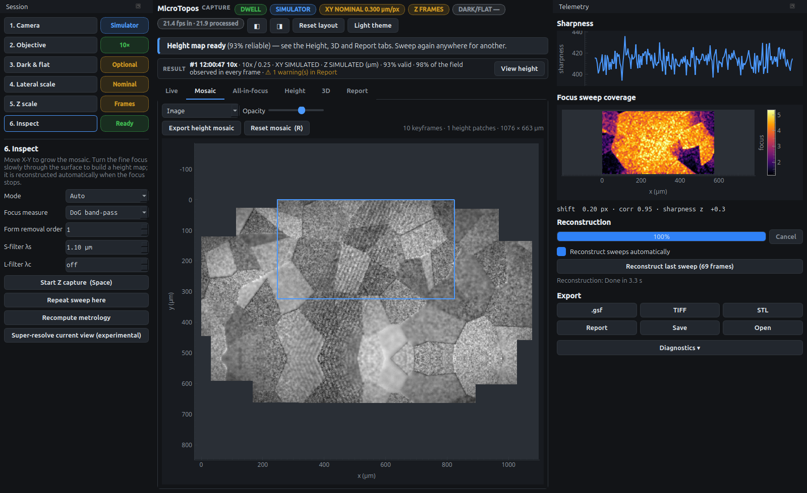
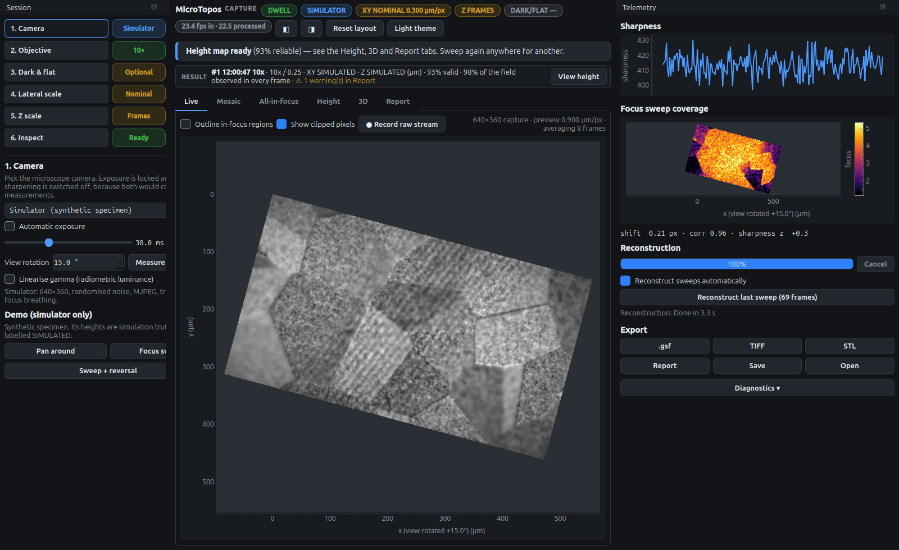

Mapping with the X-Y stage
Whenever the stage moves, MicroTopos tracks the motion from the video and stitches sharp, steady views into a mosaic. You need no encoders and nothing to start: just move.
Growing a mosaic
-
Focus on the sample and open the Mosaic tab.
-
Move the X-Y stage. The header shows
PANand the blue box on the mosaic follows the camera. -
Pause briefly now and then. Sharp, still views become keyframes, and motion-blurred frames are only used for tracking. Overlapping keyframes are aligned to each other, and when you come back to an area already mapped, the loop is closed and the whole mosaic is corrected.

|
Tip
|
Move by less than about a fifth of the field of view per frame. Faster movement blurs the frames, and the coach line then says Move slower. The tracker still follows hand-speed pans with motion blur (tested up to 60 px per frame on a 640 px view), but slower is more precise. |
When tracking is lost
If the view jumps, such as a quick shove or a big move with the lamp blocked, the camera box turns red and the coach line says Mosaic tracking lost.
-
Move back over an area already in the mosaic. The view is relocated against the stored keyframes and mapping continues.
-
If the view cannot be placed for about 40 frames, MicroTopos starts a separate area rather than risk a wrong placement corrupting what you have. Areas are not joined automatically (yet), so to keep one mosaic, go back to mapped ground before that happens.
-
Reset mosaic (R) starts again from scratch.
A scene that suddenly changes completely, for example when you turn the nosepiece, is detected as OBJECTIVE_CHANGE. A banner then asks which objective is now in place.
Height maps on the mosaic
Every height map is pinned to the keyframe where its sweep was made, and it moves with that keyframe when the mosaic is corrected. Use the menu above the mosaic:
- Image
-
the stitched camera image only.
- Image + height overlay
-
the heights in colour over the image; set the opacity with the slider.
- Height only
-
the stitched height maps alone. Where two maps overlap, they are levelled to each other by least squares and blended at the seam.

Export height mosaic writes the stitched heights as a Gwyddion .gsf file, and Save (Ctrl+S) stores the image mosaic and height mosaic with the session.
Rotating the views
On many microscopes the camera is clamped in the eyepiece tube at an angle, so a pure X movement of the stage looks diagonal on screen. Nothing is wrong with the tracking, but it is awkward to work with. Step 1 has a View rotation control for this:
-
Click Measure from X pan.
-
Turn only the stage’s X knob, by at least one field width, while the mosaic tracks.
-
Click Finish. The angle of that movement is measured and the Live, Mosaic, All-in-focus and Height views are rotated so that stage X runs horizontally.

You can also type an angle. The rotation is for display only: images, height maps, exports and all measurements stay in the camera’s own pixel grid, and the cursor readout still reports unrotated image coordinates. The setting is remembered.